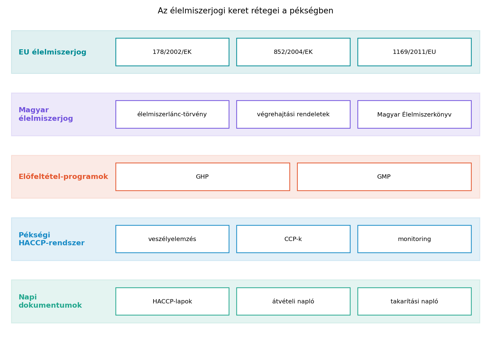

Hajnali négy óra van a pékségben. A kovászos kenyerek már a kemencében sülnek, amikor az üzletvezető szól, hogy hatósági ellenőr érkezett. A péknek nem kell jogásznak lennie, de pontosan tudnia kell, mit kérdezhet az ellenőr, milyen dokumentumokat nézhet meg, és mi a különbség a napi takarítás, a gyártási utasítás és a HACCP-rendszer között. Ha ezeket összekeverjük, az nem csak vizsgán jelent hibát, hanem a termékbiztonságot és a vállalkozás engedélyét is veszélyeztetheti.
A pék számára az előírások nem egyetlen „szabálykönyv”, hanem egymásra épülő rétegek. A felső szinten az Európai Unió rendeletei állnak, alatta a magyar törvény és rendeletek, majd a Magyar Élelmiszerkönyv, végül a pékség saját belső eljárásai és napi dokumentumai. Ezeknek a rétegeknek együtt kell működniük.

A rétegek azt is mutatják, hogy a jogszabály nem szól bele minden egyes dagasztási lépésbe. A rendeletek keretet adnak, a vállalkozónak pedig saját felelősségi körében kell kialakítania azokat a gyakorlati eljárásokat, amelyek a biztonságos terméket garantálják.
Definíció. Az élelmiszerjog azoknak az uniós és nemzeti jogszabályoknak, rendeleteknek és hatósági előírásoknak az összessége, amelyek az élelmiszerek előállítását, feldolgozását, tárolását, szállítását, jelölését és forgalmazását szabályozzák.
Definíció. Az élelmiszer-vállalkozás minden olyan – nyereség- vagy nem nyereségérdekelt – vállalkozás, amely élelmiszert állít elő, dolgoz fel vagy forgalmaz. Az élelmiszer-vállalkozó az a természetes vagy jogi személy, aki felel azért, hogy az irányítása alatt álló élelmiszer-vállalkozásban teljesüljenek az élelmiszerjog követelményei (ellenőrizendő: 178/2002/EK 3. cikk 2. és 3. pont). A pékségben ez lehet az üzemeltető, a tulajdonos vagy az a kijelölt felelős, aki a termelésért és a termékbiztonságért felel.
Definíció. Az élelmiszer-biztonság annak biztosítéka, hogy az élelmiszer a rendeltetésszerű felhasználás során nem károsítja a fogyasztó egészségét. A sütőiparban ez nem csupán azt jelenti, hogy a kenyér nem tartalmaz látható szennyeződést, hanem azt is, hogy a mikrobiológiai, kémiai és fizikai veszélyeket a gyártás során ellenőrzött keretek között tartják.
Definíció. A nyomonkövethetőség az a képesség, hogy egy élelmiszer útját az alapanyagtól a késztermékig, illetve visszafelé is azonosítani tudjuk. A pékségben ez általában tételazonosítást, szállítóleveleket, gyártási naplókat és kiszállítási jegyzékeket jelent.
Előírás. Az Európai Unió 178/2002/EK rendelete rögzíti az élelmiszerjog általános elveit: az élelmiszer-biztonság magas szintű védelmét, a kockázatelemzésen alapuló döntéshozatalt, az elővigyázatosság elvét, a fogyasztók érdekeinek védelmét, valamint az élelmiszer-vállalkozók elsődleges felelősségét és a nyomonkövethetőség követelményét. A rendelet kimondja, hogy az élelmiszer-vállalkozó felelős azért, hogy az általa előállított vagy forgalmazott élelmiszer megfeleljen az élelmiszer-biztonsági követelményeknek. (Ellenőrizendő: a rendelet hatályos egységes szerkezete és a pontos cikkek.)
Előírás. A 852/2004/EK rendelet az élelmiszer-higiénia általános követelményeit határozza meg. Eszerint az élelmiszer-vállalkozóknak a termelés, feldolgozás és forgalmazás minden szakaszában biztosítaniuk kell a higiéniát, meg kell felelniük a helyiségekre, berendezésekre, személyi higiéniára, hőmérsékletre és dokumentációra vonatkozó követelményeknek, és a HACCP-elveken alapuló eljárásokat kell működtetniük. A rendelet a sütőiparra is vonatkozik, és előírja a helyiségek, a berendezések tisztíthatóságát, a megfelelő kézmosási lehetőségeket, a hulladékkezelést és a kártevők elleni védelmet. (Ellenőrizendő: a rendelet hatályos mellékletei és a HACCP-re vonatkozó részletes előírások.)
Előírás. Magyarországon az élelmiszerláncról és hatósági felügyeletéről szóló törvény (ellenőrizendő: 2008. évi XLVI. törvény pontos címe és hatályos szövege) teremti meg az élelmiszerlánc egységes hatósági felügyeletét. A hatósági feladatokat a Nemzeti Élelmiszerlánc-biztonsági Hivatal (NÉBIH), valamint a vármegyei kormányhivatalok (élelmiszerlánc-biztonsági szakigazgatási szervei) és járási hivatalai látják el. A helyszíni ellenőrzéseket, mintavételezést és hatósági eljárásokat a területileg illetékes hatósági szerv végzi. (Ellenőrizendő: az aktuális szervezeti és illetékességi rend, a hatósági szervek pontos feladat- és hatásköre.)
Szabály. A pékségben dolgozó pék nem jogi felelős, de a napi munkája során köteles betartani a higiéniai, technológiai és nyomonkövethetőségi előírásokat. Ha hibát észlel, azt jeleznie kell a felettesének, és nem szabad hallgatnia róla, mert a termékbiztonságért a teljes vállalkozás felel, de a hibát eltitkoló dolgozó is felelősségre vonható.
A HACCP-t sokszor tévesen azonosítják a takarítással vagy a szabályok betartásával. Valójában a HACCP a veszélyelemzésen és kritikus szabályozási pontokon alapuló, célzott kockázatkezelési rendszer, amely a GHP-ra és a GMP-re épül. Ha nincs meg a megfelelő alap, a HACCP nem működik.
Definíció. A jó higiéniai gyakorlat (GHP) azoknak az alapvető higiéniai intézkedéseknek és feltételeknek az összessége, amelyek a szennyeződés megelőzéséhez és a biztonságos élelmiszer-előállításhoz szükségesek. Ide tartozik a személyi higiénia, a takarítás, a kártevőirtás, a hulladékkezelés, a vízminőség és a hőmérséklet-szabályozás.
Definíció. A jó gyártási gyakorlat (GMP) a gyártás szakszerű, ellenőrzött és dokumentált megszervezésére vonatkozó eljárások összessége. A pékségben ez jelenti a nyersanyagok megfelelő átvételét, tárolását, a gyártási folyamat lépéseinek rögzítését, a gépek beállítását és karbantartását, valamint a dolgozók betanítását.
Szabály. A GHP, a GMP és a HACCP nem ugyanazt jelenti. A GHP a „mit kell tisztán és rendben tartani, hogy ne szennyezzük a terméket” kérdésre válaszol. A GMP a „hogyan kell a terméket szakszerűen, egyenletes minőségben előállítani” kérdésre válaszol. A HACCP pedig a „melyek azok a pontok, ahol a veszélyt kifejezetten szabályoznunk kell, és mi a határérték” kérdésre válaszol.
Definíció. Az előfeltétel-programok azok az alapvető feltételek és tevékenységek, amelyek a HACCP-rendszer hatékony működéséhez szükségesek. A GHP és a GMP tipikus előfeltétel-program. Ha például nincs megbízható kézmosási lehetőség a tésztafeldolgozó közelében, akkor hiába van HACCP-rendszer, a személyi higiénia hiánya miatt a termék szennyeződhet.
Gyakorlat. A pékségben a GHP és GMP elemei jellemzően a következő területeket fedik le:
| Terület | GHP példa | GMP példa |
|---|---|---|
| Személyzet | fertőző betegség esetén élelmiszerrel nem dolgozhat; kézmosás munkakezdés előtt, szennyező tevékenység (pl. WC-használat, nyers tojás, hulladék) után és szükség szerint | betanítás a dagasztógép kezelésére, oktatási napló |
| Nyersanyag | átvételkor a lisztes zsák sérülésmentes | liszt tétel azonosítása, gyártási naplóba rögzítés |
| Tárolás | hűtőkamra hőmérséklete naplózva | FIFO-elv (először be, először ki) a tojásnál |
| Gyártás | munkafelület tiszta, eszközök fertőtlenítve | technológiai lap szerinti dagasztási idő és tésztahőmérséklet |
| Késztermék | kész kenyér csak tiszta rekeszbe kerül | hűlési idő és csomagolási mód rögzítve |
| Dokumentum | takarítási napló kitöltve | HACCP-monitoringlapok naprakészek |
Továbbvitt eredmény. A GHP és a GMP előfeltétel-programok, valamint az élelmiszerjogi keret ismerete nélkül nem érthető meg a HACCP-rendszer felépítése. Ezt a tudást az A HACCP alapjai és a veszélyelemzés alfejezetben használjuk fel. Ugyanez a jogi keret alapozza meg a minőségbiztosítási rendszert az A minőség fogalma, minőség-ellenőrzés és minőségbiztosítás alfejezetben, valamint a termékjelölési kötelezettséget a Termékjelölés és fogyasztói tájékoztatás alfejezetben.
A hatósági ellenőrzés nem „ellenséges” esemény, hanem a rendszeres felügyelet része. A NÉBIH és a járási hivatal ellenőrei előre bejelentés nélkül vagy bejelentéssel érkezhetnek. Jogosultak belépni az üzemi területre, dokumentumokat kérni, mintát venni a nyersanyagból, félkész- és késztermékből, valamint a környezetből (például törletminta a munkafelületről).
Szabály. A péknek az ellenőrzés során együtt kell működnie, pontos felvilágosítást kell adnia, és be kell mutatnia a kért dokumentumokat. Ha egy dokumentum hiányzik vagy egy gyakorlat nem megfelelő, azt a jegyzőkönyvben rögzítik. A hatóság szankciókat alkalmazhat: figyelmeztetést adhat, bírságot szabhat ki, korlátozhatja vagy felfüggesztheti a tevékenységet, és elrendelheti a termék visszahívását vagy megsemmisítését, ha az élelmiszer-biztonsági kockázatot jelent. (Ellenőrizendő: a hatályos szankciók pontos köre és a bírságok mértéke.)
Előírás. A hatóság mintavételi joga az élelmiszerlánc-felügyeleti törvényen alapul. A mintavételnek nyomon követhetőnek kell lennie, a mintához ellenminta jár, és a vizsgálatot akkreditált laboratórium végzi. A péknek a mintavételkor joga van jelen lenni, és kérheti a mintavételi jegyzőkönyv másolatát. (Ellenőrizendő: a mintavétel és az ellenminta kezelésének pontos szabályai.)
Figyelem. A hatósági ellenőrzést nem szabad félrevezetni, dokumentumot utólag hamisítani vagy a hiányosságot eltitkolni. A hamisítás súlyosabb jogkövetkezménnyel jár, mint maga a hiba. A helyes út a nyílt együttműködés, a hiba elismerése és a helyesbítő intézkedés megígérése és végrehajtása.
A hatósági ellenőrzést nem lehet kiváltani, de a jól működő belső önellenőrzés csökkenti a hibák és a hatósági intézkedések kockázatát. Az önellenőrzés azt jelenti, hogy a pékség saját maga is rendszeresen ellenőrzi a kritikus paramétereket, a higiéniai állapotot és a dokumentációt, nem csak akkor, amikor ellenőrzésre számít.
Példa. Egy pékségben a műszakvezető műszakonként legalább kétszer (vagy folyamatos naplózással) ellenőrzi a hűtőkamrák hőmérsékletét (tanulási érték: hűtőtér 0–5 °C, termék legfeljebb 5 °C; ellenőrizendő: HACCP-terv), valamint a kelesztőkamra páratartalmát, és ezt egy naplóban rögzíti. Ha a hőmérséklet a határ fölé emelkedik, átrakja az árut egy működő hűtőbe, megméri a termékek hőmérsékletét, a gyanús tételt elkülöníti, a felelős dönt a sorsáról, hívja a karbantartót, és mindezt bejegyzi. Ez a gyakorlat GHP-szintű önellenőrzés.
Példa. Egy másik pékségben a minőségért felelős dolgozó havonta belső auditot tart: megnézi, hogy a technológiai lapokon rögzített dagasztási idők megegyeznek-e a valós műszaki naplóval, ellenőrzi a takarítási naplókat, és megkóstolja a termékeket. Az eltéréseket feljegyzi, és javító intézkedést kér. Ez a gyakorlat már a GMP és a minőségbiztosítás felé mutat.
Példa. A kézmosó állomás a tésztafeldolgozó mellett van, meleg víz, szappan, papírtörlő és fertőtlenítő adagoló található rajta. A pék munkakezdés előtt és minden szennyező tevékenység után kezet mos (a gyakoriságot nem az óra, hanem a szennyeződés kockázata határozza meg, (ellenőrizendő: a pékség kézhigiéniai utasítása)); a takarítási naplóban a kézmosó állomás ellenőrzését (szappan, törlő, fertőtlenítő pótlása), nem az egyes kézmosásokat rögzítik. Ez GHP-feladat.
Példa. A pékség technológiai lapja előírja, hogy a búzakenyér tésztáját 8 percig dagasztják lassú, 6 percig gyors fokozaton, a tésztahőmérséklet 26–28 °C legyen. A pék a dagasztás végén méri a hőmérsékletet és beírja a gyártási naplóba. Ez GMP-feladat.
Példa. A pékség HACCP-terve szerint a kenyér belső hőmérsékletét a sütés végén el kell érnie legalább 96 °C-ot (tanulási példa; ellenőrizendő: a pékség HACCP-tervében rögzített érték). A pék maghőmérővel méri, és a CCP-lapon rögzíti. Ha nem éri el, a kenyeret tovább sütik vagy selejtté nyilvánítják. Ez HACCP-feladat.
Egy kisvárosi pékségben hatósági ellenőrzéskor az ellenőr a tojásos kalács gyártási tételét akarta visszakeresni a liszt szállítójáig. Az üzletvezető nem tudta megmutatni, hogy az aznapi kalácsba melyik liszttétel került, mert a zsákokról nem vezettek tételazonosítót, és a gyártási naplóban csak annyi szerepelt: „liszt”. Az ellenőr hiányosságot állapított meg. A tanulság az, hogy a nyomonkövethetőség nem elvont jogi fogalom, hanem a napi dokumentációból áll össze: a szállítólevélből, a bevételezett tétel azonosítójából, a gyártási naplóból és a kiszállítási jegyzékből. Ha ezek összekapcsolhatók, a rendszer működik.
A válaszok a ### Megoldások elején, „Önellenőrzés –
válaszok” alcím alatt találhatók.
1. feladat (A). Határozd meg saját szavaiddal a GHP, a GMP és a HACCP fogalmát, és egy-egy mondattal mutasd be, mi a szerepük a pékségben.
2. feladat (A). Nevezd meg azt az uniós rendeletet, amely az élelmiszerjog általános elveit és a nyomonkövethetőséget rögzíti, és azt, amely az élelmiszer-higiénia általános követelményeit tartalmazza. Mi a különbség a két rendelet fókuszában?
3. feladat (B). Egy pékségben az ellenőr azt kéri, hogy mutassák meg, honnan származik a ma felhasznált liszt, és mely kenyerekbe került belőle. Sorold fel, milyen dokumentumokra van szükség a nyomonkövethetőség igazolásához, és milyen sorrendben kapcsolódnak össze.
4. feladat (B). A pékségben a pékek a dagasztás után nem mérik a tésztahőmérsékletet, de a gyártási naplóba beírják a technológiai lapon megadott értéket. Elemezd ezt a gyakorlatot: melyik gyakorlati rendszer sérül? Milyen következményei lehetnek?
5. feladat (C). Tervezd meg egy kis pékség GHP/GMP előfeltétel-programjának vázlatát. Legalább hat elemet sorolj fel, és mindegyiknél jelöld, hogy GHP vagy GMP kategóriába tartozik, és miért fontos.
6. feladat (D). Képzeld el, hogy hatósági ellenőr érkezik a műszakodban. A kolléga pánikba esik, és azt javasolja, hogy gyorsan írjátok be a hiányzó hőmérsékleti adatokat a múlt heti naplóba. Mit teszel, és hogyan indoklod? Írj le legalább három helyes lépést.
Önellenőrzés – válaszok
1. feladat megoldása. A GHP a higiéniai alapfeltételek gyakorlata (például kézmosás, takarítás). A GMP a gyártás szakszerű megszervezése (például technológiai lapok, gépek beállítása). A HACCP a veszélyelemzésen alapuló, kritikus pontokat szabályozó rendszer. A GHP és GMP a HACCP alapját képezik.
2. feladat megoldása. A 178/2002/EK rendelet az élelmiszerjog általános elveit, a felelősséget és a nyomonkövethetőséget tartalmazza. A 852/2004/EK rendelet a higiénia gyakorlati követelményeit írja le. A fókusz: az első a keretelvek, a második a konkrét higiéniai feltételek.
3. feladat megoldása. Szükséges dokumentumok: szállítólevél a liszt beszállításáról, tételazonosító a liszttételen, bevételezési napló, gyártási napló (melyik tételből melyik napon mennyit használtak), receptúra/technológiai lap, kiszállítási jegyzék. Sorrend: szállítólevél → bevételezés → gyártási napló → késztermék azonosító → kiszállítás.
4. feladat megoldása. Ez a gyakorlat a GMP-t és a HACCP dokumentáció hitelességét sérti. A beírt érték nem valós mérés, tehát a gyártási napló hamis adatot tartalmaz. Ha a tészta hőmérséklete valójában túl alacsony vagy magas, nem derül ki, és hibás termék keletkezhet. Helyes: mérni kell, és a mért értéket beírni; eltérés esetén intézkedni.
5. feladat megoldása (vázlat). 1. Kézmosó állomások (GHP) – személyi szennyezés megelőzése. 2. Takarítási és fertőtlenítési terv (GHP) – felületek tisztasága. 3. Kártevőirtási program (GHP) – rovar és rágcsáló kockázat. 4. Nyersanyagátvételi eljárás (GMP) – csak megfelelő minőségű anyag kerüljön be. 5. Gyártási technológiai lapok (GMP) – egységes gyártás. 6. Dolgozók képzése (GMP) – szakszerű munkavégzés. 7. Hűtőkamra hőmérséklet-napló (GHP) – hideg lánc ellenőrzése. 8. Dokumentumkezelés (GMP) – nyomonkövethetőség.
6. feladat megoldása. Helyes lépések: 1. Nem írunk be valótlan adatot a naplóba. 2. Nyugodtan fogadom az ellenőrt, és elmondom, hogy a múlt heti naplót most nem tudom pótolni, de a mai napi adatok rendben vannak. 3. Értesítem az üzletvezetőt vagy a minőségért felelős személyt. 4. Az ellenőrnek megmutatom, ami van, és együttműködöm. A hiányzó adatokról jegyzőkönyv készülhet, de a hamisítás súlyosabb következményekkel járhat.
Az élelmiszerjog többszintű: az uniós rendeletek (178/2002/EK, 852/2004/EK – ellenőrizendő), a magyar élelmiszerlánc-felügyeleti törvény és a Magyar Élelmiszerkönyv adják a keretet, amelyet a pékség saját GHP-, GMP- és HACCP-rendszere tölt meg gyakorlattal. Az élelmiszer-vállalkozó elsődleges felelőssége a termékbiztonság; a nyomonkövethetőség ezt a felelősséget teszi ellenőrizhetővé. A GHP a higiéniai alapfeltételeket, a GMP a szakszerű gyártásszervezést jelenti, és mindkettő a HACCP előfeltétel-programja. A hatósági ellenőrzést a NÉBIH és a járási hivatal végzi, mintavétellel és dokumentumvizsgálattal; a szankciók a figyelmeztetéstől a tevékenység felfüggesztéséig terjedhetnek. A vállalkozó önellenőrzése a hibák korai felismerését szolgálja. A továbbvitt eredményeket az A HACCP alapjai és a veszélyelemzés alfejezetben használjuk fel.
A fenti szöveg a következő forrásokra támaszkodik, de a pontos cikkek, szakaszok, határidők és hatályosságuk kiadás előtt ellenőrizendők: